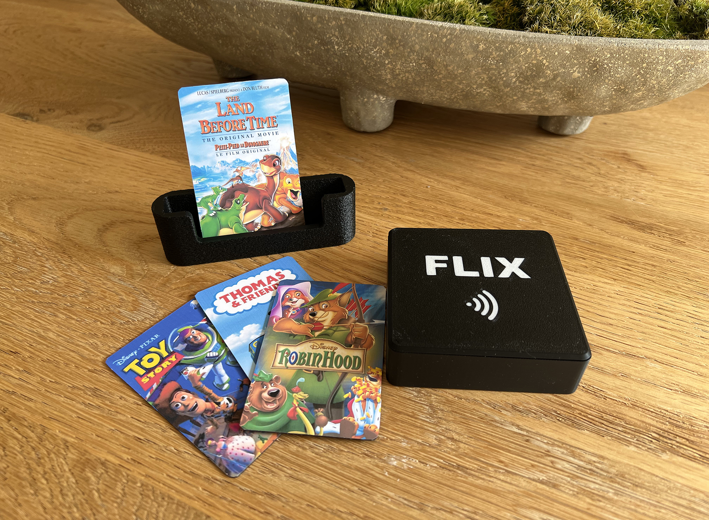
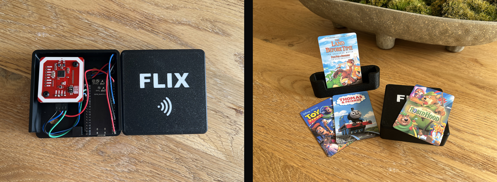

Project
FLIX
Overview
Kids today get handed a tablet and thrown into an endless scroll of YouTube recommendations, autoplay, and ads. I wanted something different for my son, something intentional, physical, and calm. Something that reminded me of the good old days of choosing a VHS (yes, I'm that old) from the shelf. So I built FLIX.
FLIX is a physical media player for kids. Each movie or show lives on an NFC card. When my son picks one from the card holder and places it on the FLIX platform, the TV turns on and the movie starts playing. No browsing, no suggestions, no algorithms, just the content I've chosen for him. When the movie ends, the TV turns off. That's it.
Under the platform, there's an NFC reader and ESP32 microcontroller inside a 3D printed case. The ESP32 reads the card and sends the tag ID over WiFi to a Raspberry Pi connected to the TV. The Pi pulls the stream from a Jellyfin media server and plays it fullscreen. HDMI-CEC handles turning the TV on and off automatically.
The whole thing is invisible. The platform sits on a table, the Pi hides behind the TV, and my son just sees cards of movies he can choose from.

